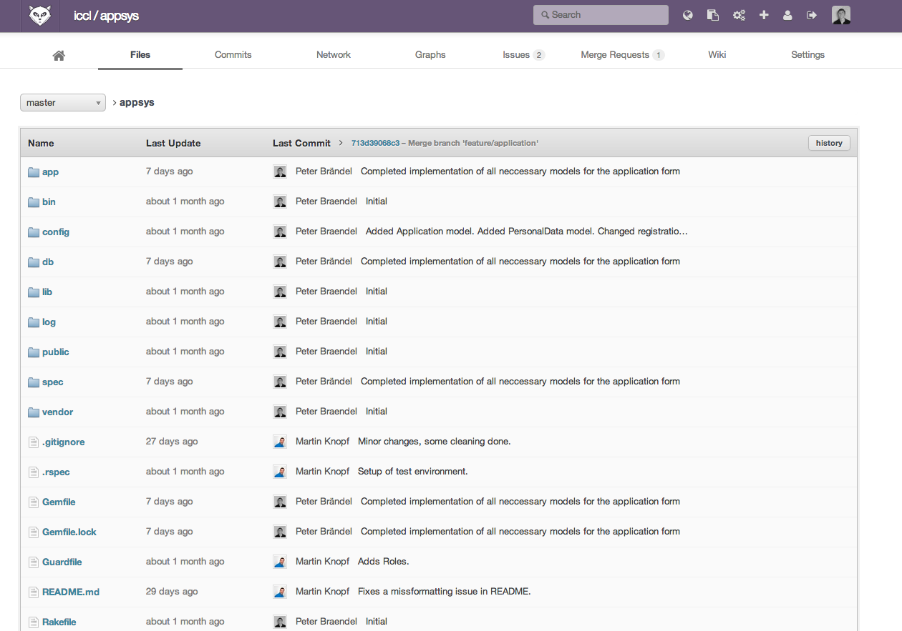
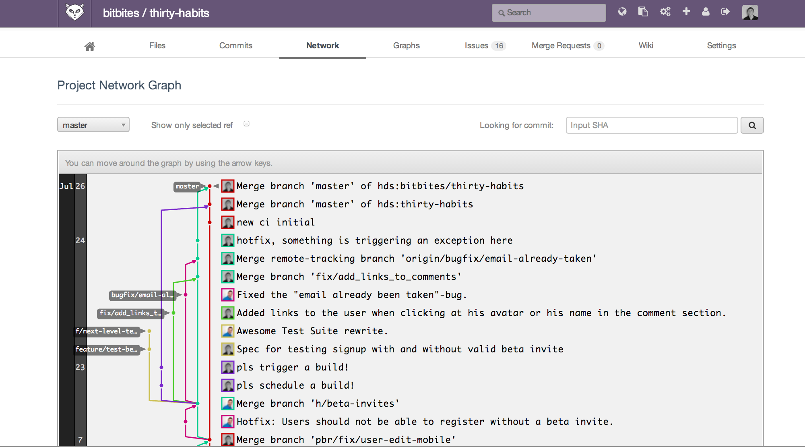
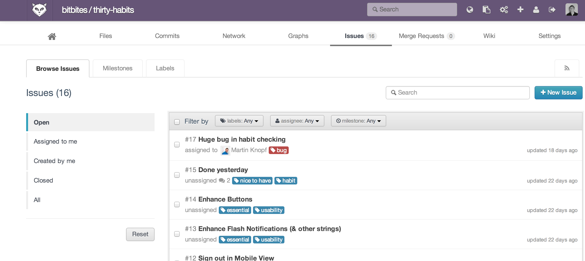
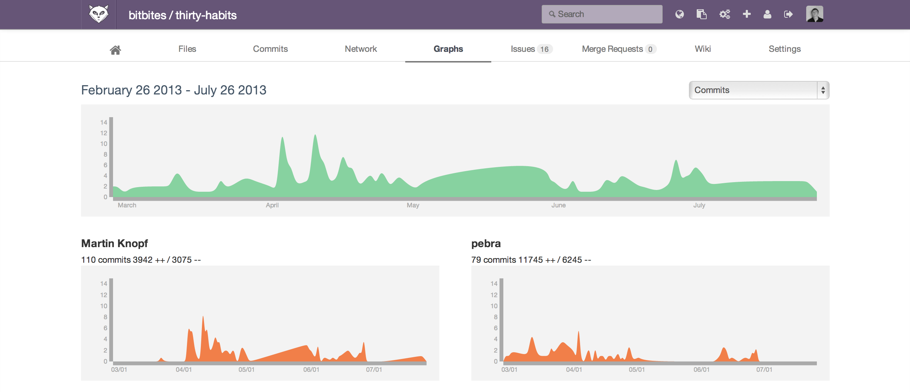
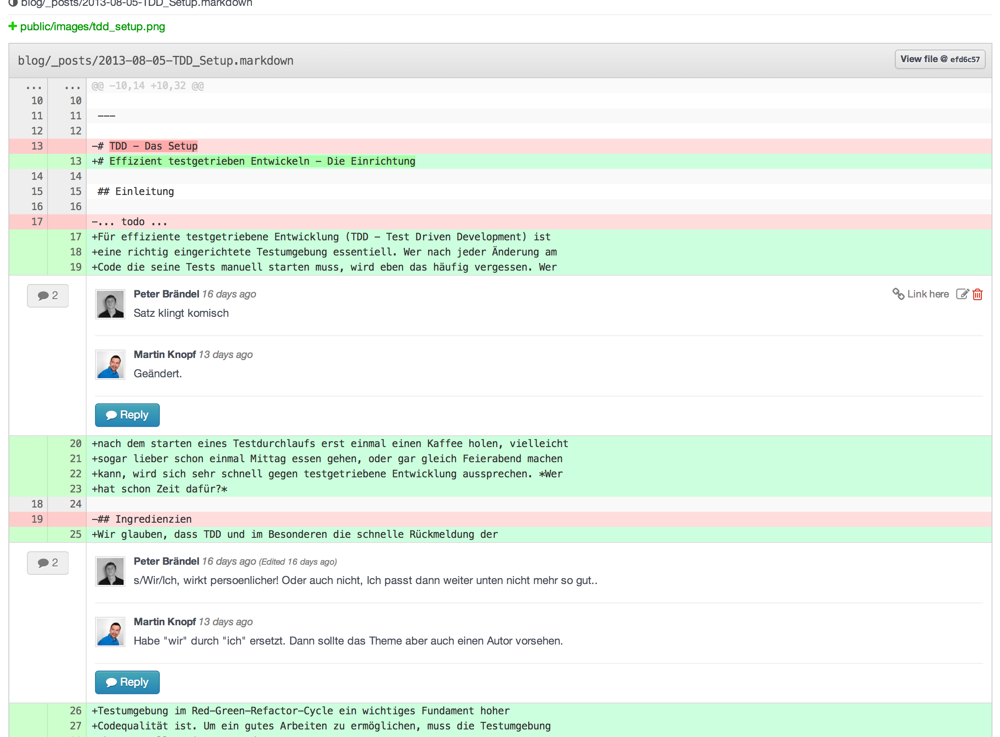
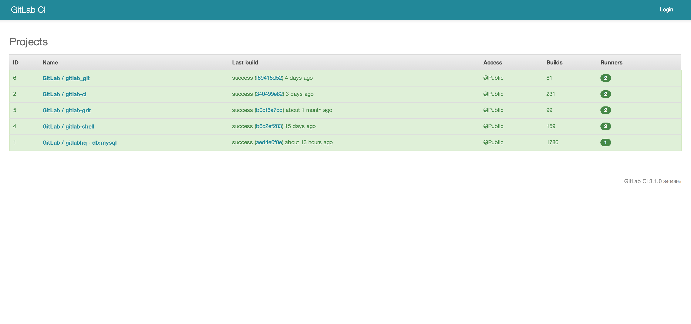
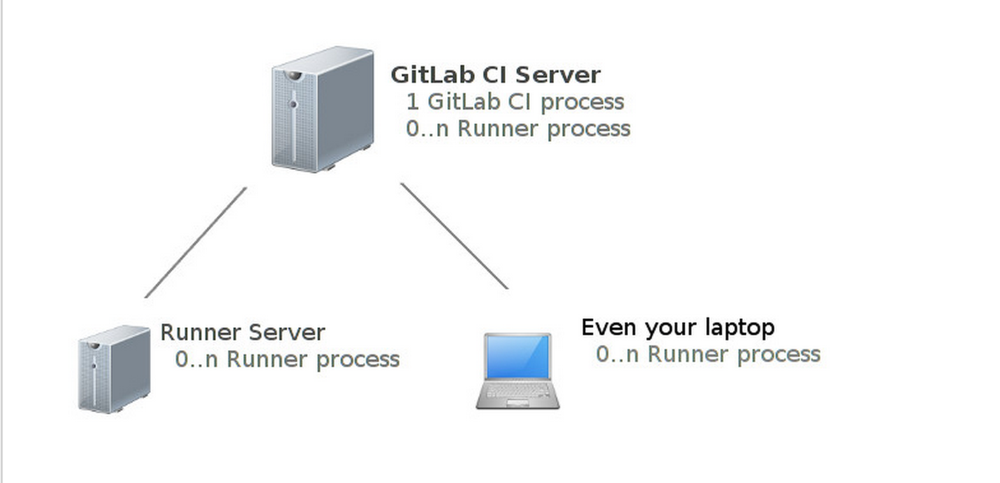

gitlab und gitlab_ci
gitlab?
- Github zum selbst hosten
- Eine Weboberfläche zur Verwaltung von Git-Projekten
- Open Source
- Rails-Projekt
Features
File Browser
branch-verlauf / netzwerk
issues
visualisierungen
Merge requests

Code review mit Kommentaren
Organisation
- Gruppen
-
Teams - Namespaces
- Meilensteine
Anbindung an
- campfire
- hipchat
- gitlab_ci
Continous integration?
Fehler werden früh erkannt.
Team bleibt über den Entwicklungsstand auf dem laufenden.
Das Risiko fehlgeschlagener Integrationen sinkt.
Gitlab_ci?
Ein continous integration Tool für Gitlab Projekte
- Open Source
- Rails-Projekt
Das Dashboard
 source: http://ci.gitlab.orgArbeitsweise
- Verbindet sich zu einer Gitlab-Instanz
- Beobachtet einen Branch
- Führt ein vom Nutzer definiertes Script aus
Arbeitsweise - Runners
 source: https://github.com/gitlabhq/gitlab-ciArbeitsweise - Runners
- Führen den eigentlichen Deploy aus
- Können auf einem beliebigen Rechner laufen
- Kommunizieren über eine API mit Gitlab_CI
- Mindestens ein Runner pro Gitlab_CI-Instanz
Demo
- https://github.com/gitlabhq/gitlabhq
- https://github.com/gitlabhq/gitlab-ci
- https://github.com/gitlabhq/gitlab-ci-runner
- @pebra
- http://pebra.net
- http://bitbites.de